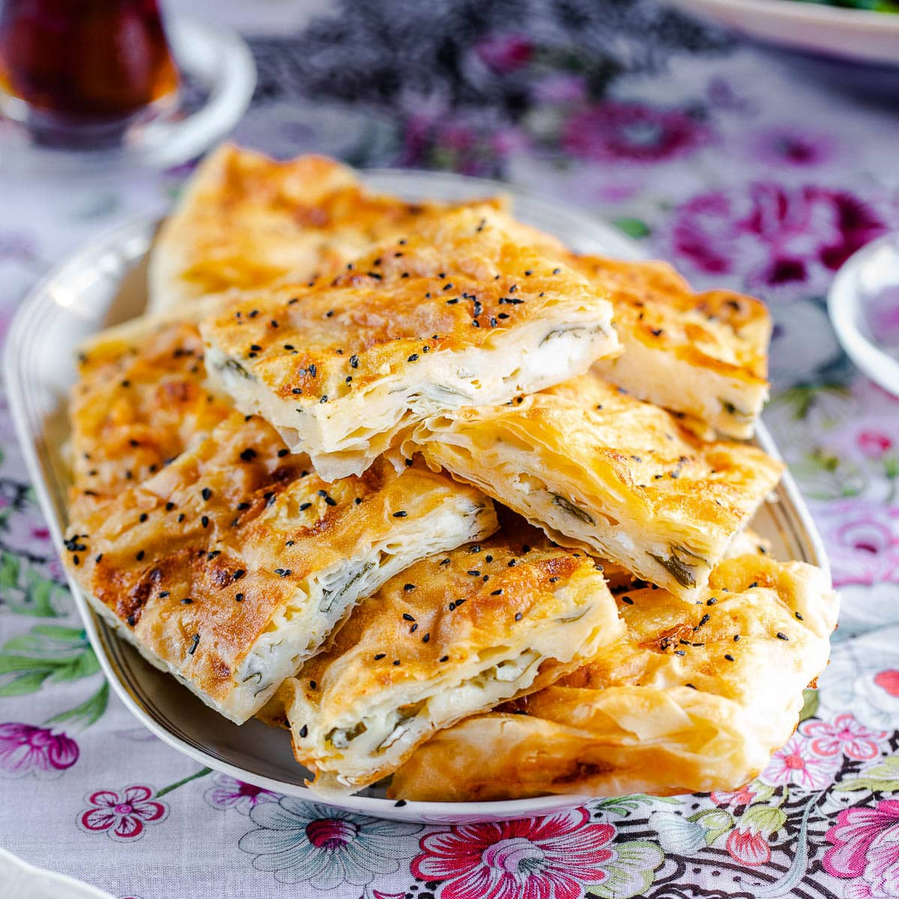

Voorgerecht (Borek)
Gehaktbrood
Börek een Turks voorgerecht waar eigenlijk een ander soort deeg voor wordt gebruikt maar met bladerdeeg ben je veel sneller klaar en is minstens net zo lekker.
Ingredienten
- 500 g gehakt (lams/runder)
- 1 pepertje
- 1 ui
- 2 teentjes knoflook
- 1 el gehakte peterselie
- Zout en peper naar smaak
- 1 tl koriander
- 1 tl cayenne peper
- 1 tl kurkuma (koenjit)
- 2 pakjes roomboter bladerdeeg uit het vriesvak
- 2 losgeklopte eieren
Bedeidingswijze
1. Verwarm de oven voor en maak de plakjes bladerdeeg los van elkaar en leg ze op het aanrecht om te ontdooien.
2. Leg vervolgens als het deeg ontdooit is een eetlepel gehakt mengsel in het midden van het deeg.
3. Vervolgens doe je de randjes van het deeg naar elkaar toe en druk ze voorzichtig aan.
4. Leg ze op het bakpapier van de bakplaat en bestrijk ze met het losgeklopte ei.
5. Doe ze in de oven en laat ze bakken tot ze goudbruin zijn.
Tip: Warm is het lekkerst